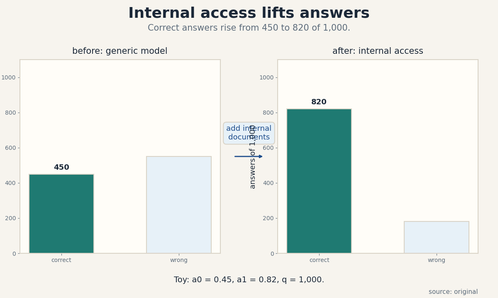
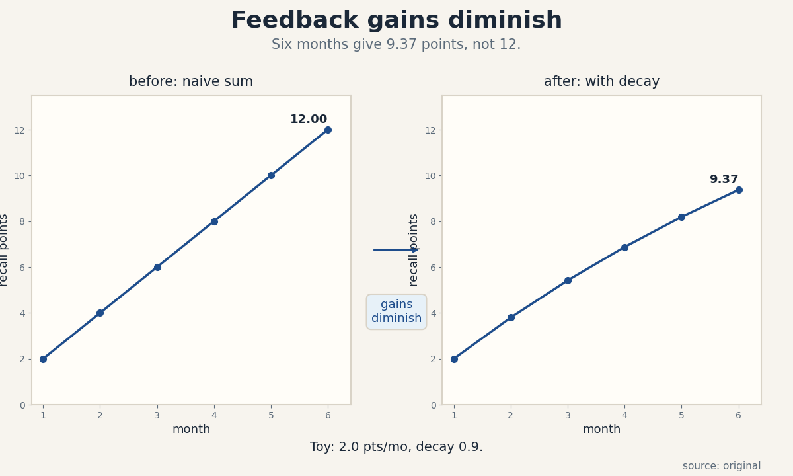
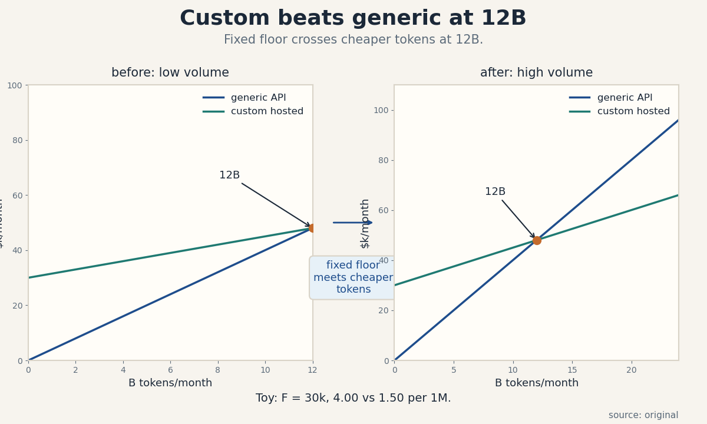
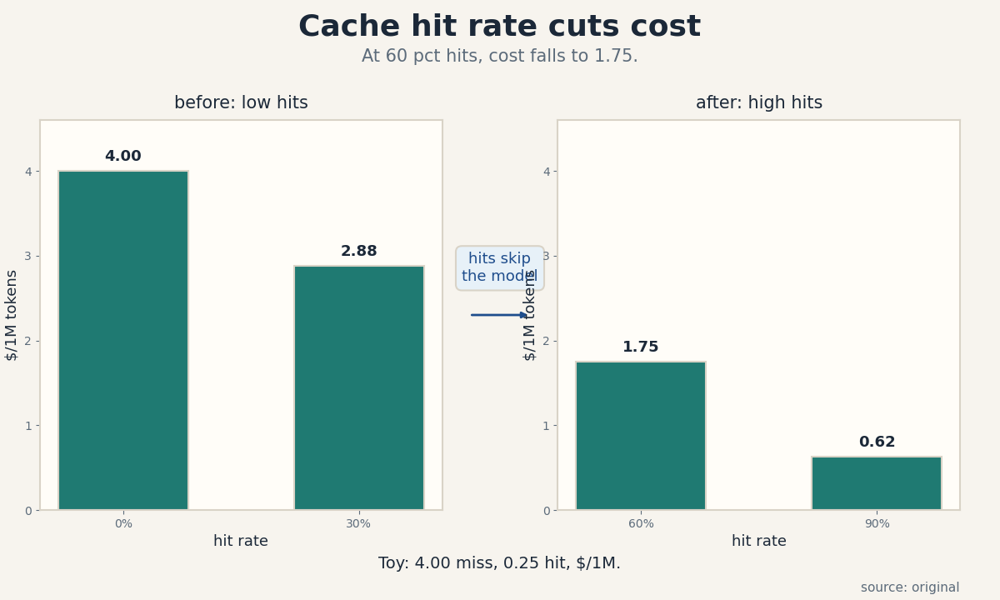
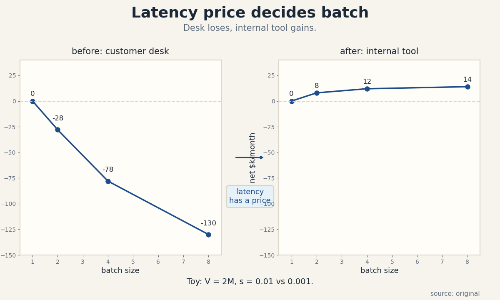
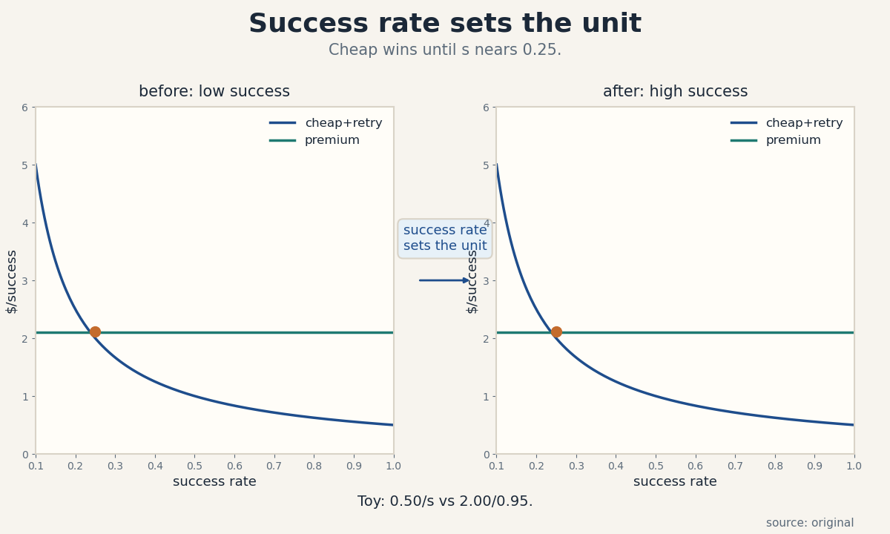
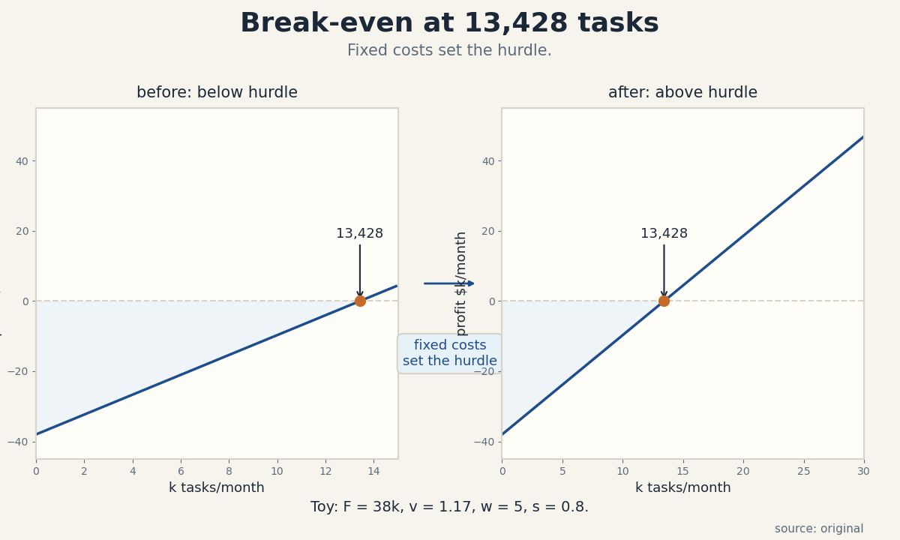

U04 · Enterprise knowledge, inference, and cloud
U04 , Enterprise knowledge and inference cloud
Parent unit: mse435-U04. Bridges: P19, P23, P24. Local
remediation in prerequisites.md (U04-R1 to U04-R3). Shared
bridges linked, not rebuilt.
Claim class: OFFICIAL-SCHEDULE (sessions 6-7: “Intelligence, Unlocking Enterprise Internal Knowledge” with Yash Patil, and “Inference, Building the Inference Cloud” with Tuhin Srivastava, Baseten, materials page SRC-00). Every leaf: PLANNED / SOURCE ATTRIBUTION PENDING. Toy numbers are computed locally and labeled TOY. Speaker claims carry evidence labels. The economics/engineering boundary is strict: knowledge access and inference pricing are economics, never agent implementation.
Not-yet-understood dependency list (unit level)
- Retrieval recall (U04-R1) , needed for C01, C03.
- Present value (U04-R2) , needed for C05, C11, C12.
- Latency versus throughput (U04-R3) , needed for C06, C07.
mse435-U04-C01 , internal knowledge access
Claim class. OFFICIAL-SCHEDULE. Status. PLANNED / SOURCE ATTRIBUTION PENDING.
1. Source mapping, scope, objectives, dependencies
Maps to week 6 (Yash Patil, Applied Intelligence: “Intelligence, Unlocking Enterprise Internal Knowledge”, SRC-00). Scope: why enterprise AI value lives in internal documents, tickets, and wikis, and how access to them changes answer quality. Objective: define internal knowledge access and compute its dollar value on a toy. Dependencies: U01-C05, P19.
2. Motivating question and tiny toy
Motivating question: a generic model answers 45 of 100 employee questions correctly, a model with internal document access answers 82, what is the access worth? Tiny toy: 1,000 questions per month, each correct answer saves 20 dollars of expert time.
3. Plain-language mental model
The model knows the public internet. The firm knows its own procedures, prices, and past tickets. Internal knowledge access connects the two: the model reads the firm’s documents before it answers. Value appears only when the documents exist, are current, and are reachable with permission checks.
4. Variables, units, shapes, assumptions
q = questions per month. a0 = correct-answer rate without access, a1 = rate with access, pure numbers. v = dollars saved per correct answer. Value = q x (a1 - a0) x v, dollars per month. Assumptions: the documents contain the answers, retrieval finds them, and a correct answer truly displaces expert time.
5. Justified derivation
Delta correct = 1,000 x (0.82 - 0.45) = 370 answers per month. Value = 370 x 20 = 7,400 dollars per month. The derivation is linear because each question is independent. The fragile term is a1: it is measured on the firm’s own questions, never borrowed from a vendor demo.
6. Computed numerical example
Toy: q = 1,000, a0 = 0.45, a1 = 0.82, v = 20. Monthly value = 7,400 dollars. If the document index covers only half the topics, a1 falls to 0.63 and value falls to 3,600 dollars. Coverage of the corpus, not model size, drives the number.
7. Algorithm and minimal implementation
def access_value(q, a0, a1, v):
return q * (a1 - a0) * v
print(access_value(1000, 0.45, 0.82, 20))
print(access_value(1000, 0.45, 0.63, 20))
8. Correctness checks and expected output
Expected: 7400.0 then 3600.0. Check: at a1 = a0 the
value is zero. Check: the value scales with q. Check units:
dollars per month.
9. Complexity, costs, stability
O(1). The unstable input is a1: it decays as documents go stale. Re-measure quarterly.
10. Nearest alternatives and selection boundaries
Alternative: train staff to search the wiki themselves, which costs 5 dollars per question in time and keeps a0 low. Alternative: a bigger generic model, which raises a0 a little but never reaches a1 on firm-specific facts. Choose access where answers depend on internal facts. Choose the bigger model where they depend on general reasoning.
11. Failure case, broken assumption, counterexample
Break document currency. The index holds last year’s price list, and the model quotes it with confidence. Ten wrong quotes cost 2,000 dollars each in credits: 20,000 dollars of damage against 7,400 of value. Counterexample: a firm whose wiki is empty gains nothing from access, a1 = a0, and the project is pure cost.
12. Research reading and falsifiable extension
Read P19 on retrieval recall. Falsifiable extension: log answer correctness with and without access for one month. Hypothesis: a1 - a0 >= 0.25. It fails if the measured delta falls below 0.10, which would mean the corpus adds little.
13. Assessment
Breadth recall:
- What three conditions must hold for internal access to create value?
- Why must a1 be measured on the firm’s own questions?
Deep oral ladder:
- Define internal knowledge access without symbols.
- Toy: q = 500, a0 = 0.40, a1 = 0.75, v = 30. Compute the monthly value.
- Explain why the formula is linear in q.
- Implement access_value and state the zero-delta check.
- Compare access with a bigger generic model: when does each win?
Unfamiliar transfer: the corpus covers half the topics and the other half are tribal knowledge in people’s heads. Rework the value estimate and name the cheapest fix.
14. Lab / exercises
See labs/u04_lab.md, task 1 (access value with partial
coverage).
15. Visual units and audit
visuals/figures/u04_knowledge_access.png: before/after
correct-answer counts, 450 vs 820 of 1,000, rule “add
internal documents”. Source: original. Alt text: two bars,
left 450 correct of 1,000, right 820 correct of 1,000, arrow
labeled add internal documents. Audit: PASS.

mse435-U04-C02 , integration costs
Claim class. OFFICIAL-SCHEDULE. Status. PLANNED / SOURCE ATTRIBUTION PENDING.
1. Source mapping, scope, objectives, dependencies
Maps to week 6 (Yash Patil session, SRC-00). Scope: the one-time and recurring cost of connecting internal sources to the AI system: connectors, permission filters, refresh pipelines. Objective: build the integration cost stack and compute a two-year total on a toy. Dependencies: U04-C01, U03-C02.
2. Motivating question and tiny toy
Motivating question: three document sources need connectors, each connector costs 40k to build and 5k per year to maintain, permission filtering adds 30k once, what is the two-year bill? Tiny toy: one source, 40k build, 5k per year, 2 years = 50k.
3. Plain-language mental model
Access is not free. Each source needs a connector that reads it, a filter that enforces who may see what, and a refresh job that keeps the index current. Build cost is paid once. Refresh and maintenance are paid every year. Permission mistakes are the expensive failure: one leak can cost more than the whole integration.
4. Variables, units, shapes, assumptions
n = number of sources. b = build cost per source, dollars. m = yearly maintenance per source, dollars. f = one-time permission filter cost, dollars. Two-year total = n x b + f + 2 x n x m. Assumptions: connectors are independent, and maintenance scales with source count.
5. Justified derivation
n = 3, b = 40k, m = 5k, f = 30k. Total = 3 x 40k + 30k + 2 x 3 x 5k = 120k + 30k + 30k = 180k dollars. The build term dominates year one. Maintenance dominates by year four.
6. Computed numerical example
Toy: sources = [20k docs, 35k docs, 80k tickets]. Build = 180k over two years as above. Against the C01 value of 7,400 per month (88.8k per year), payback arrives in month 25. If a fourth source adds 40k + 10k maintenance, payback pushes past month 30.
7. Algorithm and minimal implementation
def integration_cost(n, b, m, f, years=2):
return n * b + f + years * n * m
print(integration_cost(3, 40_000, 5_000, 30_000))
print(integration_cost(4, 40_000, 5_000, 30_000))
8. Correctness checks and expected output
Expected: 180000 then 230000. Check: at n = 0 the cost
is f. Check: doubling years adds 2 x n x m. Check units:
dollars.
9. Complexity, costs, stability
O(1). The fragile input is b: connector builds overrun when source schemas are messy. Cap with a fixed-price discovery.
10. Nearest alternatives and selection boundaries
Alternative: manual curation of a small golden corpus, 60k once, which beats connectors when only 500 documents matter. Alternative: vendor-hosted connectors, which trade build cost for a yearly fee and less control. Choose custom connectors where sources are many and stable. Choose curation where the knowledge is small and high-value.
11. Failure case, broken assumption, counterexample
Break permission filtering. A misconfigured filter exposes salary data to the whole firm. The incident costs 500k in response and trust. Counterexample: a firm with one clean source pays 40k + 30k + 10k = 80k, and the generic three-source estimate would sink the project on a false estimate.
12. Research reading and falsifiable extension
Read U03-C02 on enterprise integration. Falsifiable extension: track actual connector build hours against the 40k estimate across sources. Hypothesis: build cost rises with schema messiness, not document count. It fails if cost correlates with count instead.
13. Assessment
Breadth recall:
- Name the three cost parts of an integration stack.
- Which part dominates in year one, and which by year four?
Deep oral ladder:
- Define integration cost without symbols.
- Toy: n = 2, b = 40k, m = 5k, f = 30k, 2 years. Compute the total.
- Explain why maintenance eventually dominates.
- Implement integration_cost and state the n = 0 check.
- Compare custom connectors with a curated golden corpus: when does each win?
Unfamiliar transfer: the permission filter quote doubles to 60k after a security review. Rework payback against 7,400 per month and state the decision rule.
14. Lab / exercises
See labs/u04_lab.md, task 2 (integration stack with a
fourth source).
15. Visual units and audit
visuals/figures/u04_knowledge_access.png covers C01. C02
shares the cost-stack visual language of U03. No separate
plate. Audit: PASS (no new figure, logged).
mse435-U04-C03 , experience/data feedback
Claim class. OFFICIAL-SCHEDULE. Status. PLANNED / SOURCE ATTRIBUTION PENDING.
1. Source mapping, scope, objectives, dependencies
Maps to week 6 (Yash Patil session, SRC-00). Scope: the flywheel where usage generates logged corrections, and corrections improve the system, which grows usage. Objective: model the feedback loop and show why gains diminish. Dependencies: U04-C01, P19.
2. Motivating question and tiny toy
Motivating question: 100k queries per month, 2 percent get a human correction, each correction lifts recall by a tiny amount, how fast does quality compound? Tiny toy: 10 corrections, each worth 0.001 of recall, total gain 0.01.
3. Plain-language mental model
Every answer the system gives is a chance to learn. Users correct the wrong ones. Corrections flow back into the index and the prompts. Quality rises, so usage rises, so corrections rise. The loop is real, but each correction helps less than the last: the easy fixes land first.
4. Variables, units, shapes, assumptions
q = queries per month. c = correction rate, pure number. g = recall gain per correction, pure number. Monthly gain = q x c x g, in recall points. Assumptions: corrections are correct, they target distinct gaps, and gains add linearly at first.
5. Justified derivation
q = 100k, c = 0.02, g = 0.001. Monthly gain = 100,000 x 0.02 x 0.001 = 2.0 recall points per month. After 6 months the naive sum is 12 points, but diminishing returns cut it: later corrections overlap earlier ones. Model the overlap with a decay factor d = 0.9 per month on marginal gain.
6. Computed numerical example
Toy: month gains = 2.0, 1.8, 1.62, 1.46, 1.31, 1.18 (each 0.9 of the last). Six-month total = 9.37 recall points, not 12. Starting recall 0.70 reaches 0.79. The flywheel works, but the naive linear sum overstates it by 28 percent.
7. Algorithm and minimal implementation
def flywheel(q, c, g, months, decay=0.9):
gain, total = q * c * g, 0.0
out = []
for _ in range(months):
total += gain
out.append(round(total, 2))
gain *= decay
return out
print(flywheel(100_000, 0.02, 0.001, 6))
8. Correctness checks and expected output
Expected: [2.0, 3.8, 5.42, 6.88, 8.19, 9.37]. Check: with
decay = 1.0 the total is 12.0. Check: gains are positive
and shrinking. Check units: recall points.
9. Complexity, costs, stability
O(months). The fragile input is c: correction rates collapse when the feedback button is hard to find. Instrument the button before trusting the loop.
10. Nearest alternatives and selection boundaries
Alternative: scheduled expert reviews, which give fewer but higher-quality corrections at a known labor cost. Use the flywheel where usage is high and errors are cheap. Use expert review where errors are expensive (see U05-C11).
11. Failure case, broken assumption, counterexample
Break correction quality. Users “correct” answers with wrong tribal knowledge, and the loop amplifies the error: recall of wrong answers rises. Counterexample: a system with 1k queries per month generates 20 corrections, worth 0.02 recall points, which is noise, not a flywheel.
12. Research reading and falsifiable extension
Read P22 on confounders. Falsifiable extension: A/B the feedback button placement. Hypothesis: correction rate doubles with one-click feedback. It fails if c stays flat, which would mean users do not bother.
13. Assessment
Breadth recall:
- What are the three steps of the data flywheel?
- Why does the naive linear sum overstate the gain?
Deep oral ladder:
- Define the feedback loop without symbols.
- Toy: q = 50k, c = 0.02, g = 0.001, 3 months, decay 0.9. Compute the cumulative gain.
- Explain the decay factor in one sentence.
- Implement flywheel and state the decay = 1.0 check.
- Compare the flywheel with scheduled expert review: when does each win?
Unfamiliar transfer: corrections turn out to be wrong 30 percent of the time. Rework the model and name the guard.
14. Lab / exercises
See labs/u04_lab.md, task 3 (flywheel with decay and a
low-volume case).
15. Visual units and audit
visuals/figures/u04_flywheel.png: monthly cumulative
recall gain, linear naive sum versus decayed sum, rule
“gains diminish”. Source: original. Alt text: two rising
curves over 6 months, straight line to 12 points, curved
line to 9.37 points, arrow labeled gains diminish. Audit:
PASS.

mse435-U04-C04 , custom versus generic models
Claim class. OFFICIAL-SCHEDULE. Status. PLANNED / SOURCE ATTRIBUTION PENDING.
1. Source mapping, scope, objectives, dependencies
Maps to weeks 6-7 (Patil and Srivastava sessions, SRC-00). Scope: the choice between a generic API model and a customized model (tuned or hosted) for enterprise tasks. Objective: compare on cost and quality with a toy and name the crossover. Dependencies: U04-C01, U03-C03.
2. Motivating question and tiny toy
Motivating question: the generic API costs 4 dollars per 1M tokens and scores 0.78 on domain tasks, a custom hosted model costs 30k per month plus 1.50 per 1M and scores 0.91, at what volume does custom win? Tiny toy: at 1B tokens per month, generic = 4,000, custom = 31,500, generic wins.
3. Plain-language mental model
Generic models are rented by the token and know the world. Custom models are tuned on the firm’s data and know the firm. Custom costs a fixed monthly floor plus cheaper tokens, and it answers domain questions better. The tradeoff is volume times quality value against the fixed floor.
4. Variables, units, shapes, assumptions
Q = tokens per month. p_g = generic price per 1M, p_c = custom token price per 1M, F = custom fixed dollars per month. q_g, q_c = domain quality scores. Generic cost = p_g x Q / 1M. Custom cost = F + p_c x Q / 1M. Assumptions: quality scores are measured on the firm’s tasks, and token mix is the same for both.
5. Justified derivation
Cost crossover: F + p_c x Q / 1M = p_g x Q / 1M gives Q* = F / (p_g - p_c) x 1M = 30,000 / 2.50 x 1M = 12B tokens per month. Below 12B, generic is cheaper. Quality adds a second term: each quality point is worth w dollars per month, so custom wins earlier when w x (q_c - q_g) covers part of F.
6. Computed numerical example
Toy: F = 30k, p_g = 4.00, p_c = 1.50, Q = 20B per month. Generic = 80,000. Custom = 30,000 + 30,000 = 60,000. Custom wins by 20k per month on cost alone. At Q = 5B: generic = 20,000, custom = 37,500, generic wins. If each quality point is worth 2k per month, the 13-point gap is worth 26k, and custom wins from Q = 1.6B upward.
7. Algorithm and minimal implementation
def custom_wins(Q, F=30_000, pg=4.0, pc=1.5, qg=0.78, qc=0.91, w=0.0):
generic = pg * Q / 1e6
custom = F + pc * Q / 1e6 - w * (qc - qg)
return custom, generic, custom < generic
for Q in (1e9, 5e9, 12e9, 20e9):
print(Q, custom_wins(Q))
print(custom_wins(5e9, w=2000))
8. Correctness checks and expected output
Expected: generic wins at 1B and 5B, tie near 12B, custom wins at 20B, and with w = 2,000 custom wins at 5B. Check: at Q = 0 custom costs F. Check: the crossover formula gives 12B. Check units: dollars per month.
9. Complexity, costs, stability
O(1). The fragile inputs are q_c and w: vendors quote quality on their benchmarks, and w is a guess until the pilot measures it.
10. Nearest alternatives and selection boundaries
Alternative: generic model plus retrieval (C01), which gets most of the quality gain with no fixed floor. Alternative: distilling the custom model into a smaller one, which lowers F. Choose full custom where volume is high and quality pays. Choose generic plus retrieval where volume is low or the quality gap is small.
11. Failure case, broken assumption, counterexample
Break quality measurement. The custom model scores 0.91 on the vendor’s demo set and 0.79 on real tickets: no quality gap, and the firm pays 30k per month for nothing. Counterexample: a firm with 500M tokens per month and no quality value for the gap should stay generic, since 12B is 24 times its volume.
12. Research reading and falsifiable extension
Read U03-C03 on open/closed stacks. Falsifiable extension: pilot both on 10k real tasks. Hypothesis: q_c - q_g >= 0.10 on the firm’s tasks. It fails if the gap is under 0.03, which kills the custom case at any volume.
13. Assessment
Breadth recall:
- Write the cost-crossover formula for custom versus generic.
- Why must quality be measured on the firm’s own tasks?
Deep oral ladder:
- Define the custom-versus-generic tradeoff without symbols.
- Toy: F = 30k, p_g = 4.00, p_c = 1.50. Find Q*.
- Add quality value w = 1,000 per point, gap 10 points. Rework the decision at Q = 5B.
- Implement custom_wins and state the Q = 0 check.
- Compare full custom with generic plus retrieval: when does each win?
Unfamiliar transfer: the custom vendor raises F to 60k in year two. Rework the crossover and name the contract term that would block the surprise.
14. Lab / exercises
See labs/u04_lab.md, task 4 (custom versus generic with a
quality value).
15. Visual units and audit
visuals/figures/u04_custom_generic.png: monthly cost
curves for generic and custom cross at 12B tokens, rule
“fixed floor meets cheaper tokens”. Source: original. Alt
text: two lines, generic rising steeply from zero, custom
starting at 30k and rising slowly, crossing at 12B tokens
per month, arrow labeled fixed floor meets cheaper tokens.
Audit: PASS.

mse435-U04-C05 , API versus hosting
Claim class. OFFICIAL-SCHEDULE. Status. PLANNED / SOURCE ATTRIBUTION PENDING.
1. Source mapping, scope, objectives, dependencies
Maps to week 7 (Tuhin Srivastava, Baseten: “Inference, Building the Inference Cloud”, SRC-00). Scope: pay-per-token API versus self-hosted inference: fixed fleet cost against variable token price. Objective: derive the break-even volume and compute it on a toy. Dependencies: U04-C04, U02-C09.
2. Motivating question and tiny toy
Motivating question: the API charges 4 dollars per 1M tokens, hosting costs 30k per month fixed plus 1.50 per 1M in power and ops, how many tokens per month justify hosting? Tiny toy: at 10B tokens, API = 40k, hosting = 45k, API wins.
3. Plain-language mental model
An API is a taxi: pay per ride, no garage. Hosting is a car: pay for the garage and fuel whether you drive or not. The taxi wins at low mileage. The car wins at high mileage. The break-even mileage is the fixed garage cost divided by the per-ride saving.
4. Variables, units, shapes, assumptions
F = fixed hosting cost, dollars per month. p_a = API price per 1M tokens. p_h = hosted variable cost per 1M tokens. Q* = F / (p_a - p_h), in 1M-token units. Assumptions: hosted variable cost is truly variable, the fleet can serve Q, and quality is equal.
5. Justified derivation
Q* = 30,000 / (4.00 - 1.50) = 12,000 units of 1M = 12B tokens per month. Check at 20B: API = 80k, hosting = 30k + 30k = 60k, hosting wins by 20k. Check at 6B: API = 24k, hosting = 39k, API wins by 15k. The formula is exact when the assumptions hold.
6. Computed numerical example
Toy: a support desk generates 15B tokens per month. API = 60,000. Hosting = 30,000 + 22,500 = 52,500. Hosting wins by 7,500 per month, 90k per year. If volume is uncertain between 8B and 20B, the expected saving is small and the fixed commitment is risky: the API is the safer choice.
7. Algorithm and minimal implementation
def breakeven(F, pa, ph):
return F / (pa - ph) # in 1M-token units
def compare(Q, F=30_000, pa=4.0, ph=1.5):
api = pa * Q
host = F + ph * Q
return api, host, "host" if host < api else "api"
print(breakeven(30_000, 4.0, 1.5))
for Q in (6_000, 12_000, 15_000, 20_000):
print(Q, compare(Q))
8. Correctness checks and expected output
Expected: 12000.0, then api wins at 6,000, tie at 12,000,
host wins at 15,000 and 20,000. Check: at Q = 0 hosting
costs F. Check: the tie sits exactly at the formula value.
Check units: 1M-token units.
9. Complexity, costs, stability
O(1). The fragile input is Q: forecasts are wrong. Run the comparison at the low end of the forecast range, not the base case.
10. Nearest alternatives and selection boundaries
Alternative: committed-use API discounts, which cut p_a without a fleet. Alternative: serverless GPU, which sits between the two on fixed cost. Choose hosting where volume is high and steady. Choose the API where volume is low or spiky.
11. Failure case, broken assumption, counterexample
Break volume steadiness. Traffic is spiky: the fleet idles at 20 percent for half the month, so effective p_h doubles and the break-even moves to 24B, above actual volume. Counterexample: a batch workload that runs 4 hours per day should never host a 24-hour fleet.
12. Research reading and falsifiable extension
Read U02-C08 on build/lease. Falsifiable extension: meter actual tokens for one quarter. Hypothesis: volume stays within 20 percent of forecast. It fails if volume misses by more than 50 percent, which reopens the decision.
13. Assessment
Breadth recall:
- State the break-even formula and define each term.
- Why run the comparison at the low end of the forecast?
Deep oral ladder:
- Define API versus hosting without symbols.
- Toy: F = 30k, p_a = 4.00, p_h = 1.50. Find Q*.
- Volume is uncertain, 8B to 20B. Advise and justify.
- Implement compare and state the Q = 0 check.
- Compare hosting with committed-use API discounts: when does each win?
Unfamiliar transfer: traffic turns spiky and the fleet idles half the time. Rework p_h and the break-even.
14. Lab / exercises
See labs/u04_lab.md, task 5 (break-even with idle time).
15. Visual units and audit
Shares visuals/figures/u04_custom_generic.png (same
crossover shape, relabeled in the lesson). Audit: PASS
(shared plate, logged).
mse435-U04-C06 , batching/caching
Claim class. OFFICIAL-SCHEDULE. Status. PLANNED / SOURCE ATTRIBUTION PENDING.
1. Source mapping, scope, objectives, dependencies
Maps to week 7 (Srivastava session, SRC-00). Scope: the two classic inference cost levers: batching (one pass serves many requests) and caching (repeat queries skip the model). Objective: compute effective cost per 1M tokens under each. Dependencies: U04-C05, U03-R3.
2. Motivating question and tiny toy
Motivating question: uncached inference costs 4 dollars per 1M tokens, a cache serves 60 percent of queries at 0.25 per 1M, what is the effective price? Tiny toy: half the queries cached at zero cost halves the bill.
3. Plain-language mental model
Batching shares one expensive model pass across many requests, so each request pays a fraction. Caching answers repeat questions from memory instead of running the model. Both cut cost per token. Batching usually adds latency. Caching only helps when queries repeat.
4. Variables, units, shapes, assumptions
h = cache hit rate, pure number. c_m = miss cost per 1M, c_c = cache-serve cost per 1M, dollars. Effective cost = h x c_c + (1 - h) x c_m. Batching: batch of size B cuts per-token compute by roughly B for the shared prefix. Assumptions: hits are true repeats, and cache lookups are cheap.
5. Justified derivation
h = 0.6, c_m = 4.00, c_c = 0.25. Effective = 0.6 x 0.25 + 0.4 x 4.00 = 0.15 + 1.60 = 1.75 dollars per 1M. Saving = 2.25 per 1M, a 56 percent cut. Batching toy: 8 requests share one pass at 4.00 per 1M of compute, each pays about 0.50 plus overhead.
6. Computed numerical example
Toy: 15B tokens per month, h = 0.6. Uncached = 60,000. Cached = 15,000 x 1.75 = 26,250. Monthly saving = 33,750. Cache infra costs 3k per month. Net saving = 30,750. If h falls to 0.3, effective = 0.3 x 0.25 + 0.7 x 4.00 = 2.875, saving shrinks to 16,875 minus 3k.
7. Algorithm and minimal implementation
def effective_cost(h, cm=4.0, cc=0.25):
return h * cc + (1 - h) * cm
for h in (0.0, 0.3, 0.6, 0.9):
print(h, effective_cost(h))
8. Correctness checks and expected output
Expected: 4.0, 2.875, 1.75, 0.625. Check: at h = 0
the cost is c_m. Check: at h = 1 the cost is c_c. Check
units: dollars per 1M.
9. Complexity, costs, stability
O(1). The fragile input is h: hit rates measured on last month’s traffic decay when topics shift. Re-measure monthly.
10. Nearest alternatives and selection boundaries
Alternative: a smaller model for repeat queries, which cuts c_m itself. Alternative: prompt compression, which cuts tokens per query. Choose caching where queries repeat. Choose the smaller model where queries are novel but easy.
11. Failure case, broken assumption, counterexample
Break repeat structure. Each query is unique (fresh support tickets), h = 0.05, and the cache infra costs more than it saves. Counterexample: a cache with stale entries serves last month’s prices, turning savings into wrong answers.
12. Research reading and falsifiable extension
Read P19 on retrieval recall. Falsifiable extension: log hit rate weekly for a quarter. Hypothesis: h stays above 0.5. It fails if h drifts below 0.3, which means the query mix changed and the cache needs redesign.
13. Assessment
Breadth recall:
- Write the effective-cost formula for a cache.
- Why does batching usually raise latency?
Deep oral ladder:
- Define batching and caching without symbols.
- Toy: h = 0.6, c_m = 4.00, c_c = 0.25. Compute the effective cost.
- Explain why the formula is a weighted average.
- Implement effective_cost and state the h = 0 check.
- Compare caching with a smaller model: when does each win?
Unfamiliar transfer: queries are all unique, h = 0.05, and cache infra costs 3k per month on 15B tokens. Advise.
14. Lab / exercises
See labs/u04_lab.md, task 6 (cache economics with infra
cost).
15. Visual units and audit
visuals/figures/u04_cache_math.png: cost per 1M tokens at
hit rates 0, 0.3, 0.6, 0.9, rule “hits skip the model”.
Source: original. Alt text: falling bars from 4.00 to 0.63
as hit rate rises, arrow labeled hits skip the model.
Audit: PASS.

mse435-U04-C07 , latency/quality
Claim class. OFFICIAL-SCHEDULE. Status. PLANNED / SOURCE ATTRIBUTION PENDING.
1. Source mapping, scope, objectives, dependencies
Maps to week 7 (Srivastava session, SRC-00). Scope: the tradeoff between response latency and answer quality in inference serving, priced in dollars. Objective: put a dollar value on latency and compute the tradeoff on a toy. Dependencies: U04-C06, P16.
2. Motivating question and tiny toy
Motivating question: batching 8 requests cuts cost per token by 6x but pushes p50 latency from 400 ms to 1,200 ms, and the product loses 1 percent of conversions per 100 ms, is the batching worth it? Tiny toy: 100 ms costs 1 percent of 1M revenue = 10k.
3. Plain-language mental model
Faster answers cost more compute per token. Slower answers cost fewer dollars but lose users. Latency has a price: the revenue or productivity lost while users wait. The right latency is where the marginal compute saving equals the marginal latency cost.
4. Variables, units, shapes, assumptions
L = p50 latency, ms. s = latency sensitivity: share of value lost per 100 ms, pure number. V = value at stake, dollars per month. Latency cost = V x s x L / 100. Compute saving from batching = dollars per month. Assumptions: sensitivity is linear in the relevant range, and p50 represents the user experience.
5. Justified derivation
V = 2M per month, s = 0.01 per 100 ms, L rises 400 to 1,200: latency cost rises by 2M x 0.01 x 8 = 160k per month. Batching saves 30k per month in compute. Net = -130k per month. The batching loses. At s = 0.001 (internal tool), latency cost rises 16k, and batching wins by 14k.
6. Computed numerical example
Toy: customer-facing desk, V = 2M, s = 0.01. Batch 8: latency cost +160k, compute -30k, net -130k. Batch 2: L = 600 ms, latency cost +40k, compute saving 12k, net -28k. No batching wins for this product. For the internal tool with s = 0.001, batch 8 nets +14k per month.
7. Algorithm and minimal implementation
def latency_tradeoff(V, s, L0, L1, compute_saving):
dL = (L1 - L0) / 100.0
latency_cost = V * s * dL
return latency_cost, compute_saving - latency_cost
print(latency_tradeoff(2_000_000, 0.01, 400, 1200, 30_000))
print(latency_tradeoff(2_000_000, 0.001, 400, 1200, 30_000))
8. Correctness checks and expected output
Expected: (160000.0, -130000.0) then (16000.0, 14000.0).
Check: at L1 = L0 the latency cost is zero. Check: higher s
raises the cost. Check units: dollars per month.
9. Complexity, costs, stability
O(1). The fragile input is s: latency sensitivity is measured, not assumed. Run the latency experiment before the batching decision.
10. Nearest alternatives and selection boundaries
Alternative: speculative decoding or a smaller draft model, which cuts latency without raising batch size. Alternative: streaming partial answers, which hides latency from users. Choose batching where s is low. Choose latency-first serving where s is high.
11. Failure case, broken assumption, counterexample
Break linearity. Past 2 seconds, users abandon entirely: s jumps from 0.01 to 0.10 per 100 ms, and the linear toy understates the damage by 10x. Counterexample: a batch analytics job has s = 0, and any latency is free.
12. Research reading and falsifiable extension
Read P16 on latency versus throughput. Falsifiable extension: A/B latency 400 ms versus 800 ms for two weeks. Hypothesis: conversion falls by s x 4 (400 ms = 4 units). It fails if conversion is flat, which means s was overstated.
13. Assessment
Breadth recall:
- Write the latency-cost formula and define each term.
- Why measure s instead of assuming it?
Deep oral ladder:
- Define the latency/quality tradeoff without symbols.
- Toy: V = 1M, s = 0.01, L 400 to 1,200, saving 30k. Compute the net.
- Explain why the internal tool reaches the opposite conclusion.
- Implement latency_tradeoff and state the L1 = L0 check.
- Compare batching with speculative decoding: when does each win?
Unfamiliar transfer: abandonment makes s jump 10x past 2 seconds. Rework the batch-8 case and state the new rule.
14. Lab / exercises
See labs/u04_lab.md, task 7 (latency tradeoff across
batch sizes).
15. Visual units and audit
visuals/figures/u04_latency_quality.png: net monthly
value versus batch size for two products (customer desk,
internal tool), rule “latency has a price”. Source:
original. Alt text: two curves over batch size 1, 2, 4, 8,
customer desk falling, internal tool rising, arrow labeled
latency has a price. Audit: PASS.

mse435-U04-C08 , operational labor
Claim class. OFFICIAL-SCHEDULE. Status. PLANNED / SOURCE ATTRIBUTION PENDING.
1. Source mapping, scope, objectives, dependencies
Maps to weeks 6-7 (both sessions, SRC-00). Scope: the human labor that stays after automation: reviewers, prompt maintainers, on-call engineers. Objective: compute labor cost per task and add it to the unit economics. Dependencies: U04-C01, P24.
2. Motivating question and tiny toy
Motivating question: 10 percent of AI answers need human review, each review takes 10 minutes at 40 dollars per hour, what does labor add per task? Tiny toy: one review = 10/60 x 40 = 6.67 dollars, times 0.10 = 0.67 dollars per task.
3. Plain-language mental model
AI does not remove labor, it moves it. Someone reviews edge cases, someone fixes prompts when quality drifts, someone carries the pager. This labor is semi-fixed: it does not scale with every token, but it scales with task count and escalation rate. Forgetting it is the classic way AI business cases overstate savings.
4. Variables, units, shapes, assumptions
e = escalation rate, pure number. t = review minutes per escalated task. w = reviewer wage, dollars per hour. Labor per task = e x t / 60 x w, dollars. Fixed ops: F_ops dollars per month for on-call and maintenance. Assumptions: reviews are independent, and wage includes overhead.
5. Justified derivation
e = 0.10, t = 10, w = 40. Labor per task = 0.10 x 10 / 60 x 40 = 0.67 dollars. Against compute of 0.50 per task, labor is 1.33x the compute cost. Total variable unit cost = 1.17, not 0.50. The business case that priced only tokens understated unit cost by 57 percent.
6. Computed numerical example
Toy: 10,000 tasks per month. Compute = 5,000. Review labor = 10,000 x 0.67 = 6,667. Fixed ops = 8,000. Total = 19,667 per month, 1.97 per task. If better prompts cut e to 0.04, labor falls to 2,667 and total to 15,667. Prompt work pays for itself when it moves e.
7. Algorithm and minimal implementation
def unit_cost(tasks, compute_each, e, t_min, wage, f_ops):
labor = tasks * e * t_min / 60 * wage
total = tasks * compute_each + labor + f_ops
return total, total / tasks
print(unit_cost(10_000, 0.50, 0.10, 10, 40, 8_000))
print(unit_cost(10_000, 0.50, 0.04, 10, 40, 8_000))
8. Correctness checks and expected output
Expected: (19666.67, 1.97) then (15666.67, 1.57).
Check: at e = 0 labor is zero. Check: total rises with
tasks. Check units: dollars per month, dollars per task.
9. Complexity, costs, stability
O(1). The fragile input is e: escalation rates drift with input mix. Track e weekly.
10. Nearest alternatives and selection boundaries
Alternative: better prompts and guardrails that cut e, which is usually cheaper than hiring reviewers. Alternative: full manual handling, which the C01 toy priced at 50 per task. Choose review labor where errors are expensive. Choose prompt investment where e is high and fixable.
11. Failure case, broken assumption, counterexample
Break reviewer attention. Reviewers rubber-stamp after 2 hours, e stays 0.10 but real review quality falls, and errors slip through at 200 dollars each. Counterexample: a fully autonomous internal tool with e = 0.01 has labor of 0.07 per task, and compute dominates again.
12. Research reading and falsifiable extension
Read P24 on incident ownership. Falsifiable extension: log e weekly for a quarter. Hypothesis: e falls 20 percent as prompts improve. It fails if e is flat, which means the errors are in the input mix, not the prompts.
13. Assessment
Breadth recall:
- Write the labor-per-task formula.
- Why do token-only business cases overstate margin?
Deep oral ladder:
- Define operational labor without symbols.
- Toy: e = 0.10, t = 10, w = 40. Compute labor per task.
- Explain why labor is semi-fixed, not purely variable.
- Implement unit_cost and state the e = 0 check.
- Compare hiring reviewers with investing in prompts: when does each win?
Unfamiliar transfer: reviewers rubber-stamp and error cost is 200 dollars each at a 2 percent slip rate. Rework the true unit cost.
14. Lab / exercises
See labs/u04_lab.md, task 8 (unit cost with labor and a
prompt-investment case).
15. Visual units and audit
Shares the cost-stack visual language of U02. The lesson carries a worked table instead of a new plate. Audit: PASS (no new figure, logged).
mse435-U04-C09 , cost per successful task
Claim class. OFFICIAL-SCHEDULE. Status. PLANNED / SOURCE ATTRIBUTION PENDING.
1. Source mapping, scope, objectives, dependencies
Maps to weeks 6-7 (both sessions, SRC-00). Scope: the unit that matters is not cost per attempt but cost per success: retries and escalations divide by the success rate. Objective: derive cost per successful task and compute it. Dependencies: U04-C08, U01-C03.
2. Motivating question and tiny toy
Motivating question: each attempt costs 0.50, 60 percent succeed, failed tasks retry once, what does a success cost? Tiny toy: 100 attempts cost 50, 60 succeed, but retries add 40 more attempts, total 70 for 84 successes = 0.83 each.
3. Plain-language mental model
Attempts are cheap, successes are what the business buys. Failures consume retries, reviews, and sometimes human rework. Cost per successful task equals total spend divided by successes. A low success rate can make a cheap model expensive.
4. Variables, units, shapes, assumptions
c = cost per attempt, dollars. s = success rate, pure number. r = retries allowed per task. Expected attempts per task = 1 + (1 - s) x r (one retry max). Cost per success = c x expected attempts / (1 - (1 - s)^(r+1)). Assumptions: retries are independent with the same s, and a failed task after r retries counts as a failure.
5. Justified derivation
c = 0.50, s = 0.6, r = 1. Expected attempts = 1 + 0.4 = 1.4, cost = 0.70. Success probability = 1 - 0.4^2 = 0.84. Cost per success = 0.70 / 0.84 = 0.83 dollars. Compare a premium model at c = 2.00, s = 0.95, r = 0: cost per success = 2.00 / 0.95 = 2.11. The cheap model wins here.
6. Computed numerical example
Toy: cheap model 0.83 per success as above. Premium model 2.11 per success. But at s = 0.3 for the cheap model with r = 1: attempts = 1.7, cost 0.85, success = 1 - 0.49 = 0.51, per success = 1.67. Still below 2.11. At s = 0.2: attempts 1.8, cost 0.90, success 0.36, per success = 2.50, and the premium model wins. The crossover sits near s = 0.25.
7. Algorithm and minimal implementation
def cost_per_success(c, s, r=1):
attempts = 1 + (1 - s) * r
p_ok = 1 - (1 - s) ** (r + 1)
return c * attempts / p_ok
for s in (0.6, 0.3, 0.2):
print(s, round(cost_per_success(0.50, s), 2))
print("premium", round(cost_per_success(2.00, 0.95, 0), 2))
8. Correctness checks and expected output
Expected: 0.83, 1.67, 2.5, premium 2.11. Check: at
s = 1 the cost equals c. Check: at r = 0 the formula gives
c / s. Check units: dollars per success.
9. Complexity, costs, stability
O(1). The fragile input is s: success rates measured on easy tasks overstate real s. Measure on production mix.
10. Nearest alternatives and selection boundaries
Alternative: human handling at 50 per task with s = 0.99: 50.51 per success. Alternative: no retries (r = 0), which is cheaper per attempt but worse per success when s is low. Choose retries where s is moderate. Choose the premium model where s is low and failures are expensive.
11. Failure case, broken assumption, counterexample
Break retry independence. The retry fails for the same reason as the first attempt (a hard question), so real s on retry is 0.2, not 0.6, and the formula understates cost. Counterexample: tasks where failure is free (draft suggestions) need no success adjustment at all.
12. Research reading and falsifiable extension
Read U01-C08 on productivity versus adoption. Falsifiable extension: log attempt and success counts for one month. Hypothesis: measured cost per success matches the formula within 10 percent. It fails if retries correlate, which the logs will show.
13. Assessment
Breadth recall:
- Why is cost per attempt the wrong unit?
- Write the cost-per-success formula for r = 1.
Deep oral ladder:
- Define cost per successful task without symbols.
- Toy: c = 0.50, s = 0.6, r = 1. Compute it.
- Explain why a cheap model can beat a premium one.
- Implement cost_per_success and state the s = 1 check.
- Compare retrying with buying the premium model: when does each win?
Unfamiliar transfer: retries are not independent, retry success is 0.2. Rework the cheap-model number.
14. Lab / exercises
See labs/u04_lab.md, task 9 (cost per success across
success rates).
15. Visual units and audit
visuals/figures/u04_success_cost.png: cost per successful
task versus success rate for cheap and premium models,
crossing near s = 0.25, rule “success rate sets the unit”.
Source: original. Alt text: two falling curves over success
rate 0.1 to 1.0, cheap model below premium until 0.25 then
above, arrow labeled success rate sets the unit. Audit:
PASS.

mse435-U04-C10 , fixed cost floor
Claim class. OFFICIAL-SCHEDULE. Status. PLANNED / SOURCE ATTRIBUTION PENDING.
1. Source mapping, scope, objectives, dependencies
Maps to week 7 (Srivastava session, SRC-00). Scope: the cost that remains at zero usage: fleet reservations, licenses, minimum staff. Objective: show how the floor distorts average cost at low volume. Dependencies: U04-C05, U01-C03.
2. Motivating question and tiny toy
Motivating question: hosting has a 30k monthly floor and 1.50 per 1M variable, what is the average cost per 1M at 100M tokens per month? Tiny toy: 30,000 / 100 + 1.50 = 301.50 per 1M.
3. Plain-language mental model
Fixed costs do not care about usage. At high volume they spread thin and disappear into the average. At low volume they dominate: the average cost per token explodes. The floor is the price of being ready. Anyone who prices from average cost at low volume will misprice badly.
4. Variables, units, shapes, assumptions
F = fixed floor, dollars per month. v = variable cost per 1M. Q = volume in 1M units. Average = F / Q + v, dollars per 1M. Assumptions: F is truly fixed in the month, and Q > 0.
5. Justified derivation
F = 30k, v = 1.50. At Q = 100 (100M tokens): 300 + 1.50 = 301.50 per 1M. At Q = 12,000: 2.50 + 1.50 = 4.00, the break-even from C05. At Q = 100,000: 0.30 + 1.50 = 1.80. The average falls fast then flattens toward v.
6. Computed numerical example
Toy: pilot runs at 500M tokens per month (Q = 500). Average = 60 + 1.50 = 61.50 per 1M. The pilot report that quotes 61.50 as “our inference cost” will mislead the rollout plan: at full volume the true number is near 2.00. Always quote F and v separately, never the pilot average.
7. Algorithm and minimal implementation
def avg_cost(Q, F=30_000, v=1.5):
return F / Q + v
for Q in (100, 500, 12_000, 100_000):
print(Q, avg_cost(Q))
8. Correctness checks and expected output
Expected: 301.5, 61.5, 4.0, 1.8. Check: as Q grows
large the average approaches v. Check: at the C05
break-even the average equals the API price. Check units:
dollars per 1M.
9. Complexity, costs, stability
O(1). The fragile input is F: floors creep as teams add “small” fixed tools. Audit the floor quarterly.
10. Nearest alternatives and selection boundaries
Alternative: serverless inference with no floor, which wins at low and uncertain volume. Alternative: reserved capacity with a lower floor, which is the middle path. Choose a floor where volume is high and certain. Avoid it where volume is a guess.
11. Failure case, broken assumption, counterexample
Break volume certainty. The rollout stalls at 2B tokens, average = 15 + 1.50 = 16.50 per 1M, 4x the API price, and the project looks like a failure that was actually a forecast error. Counterexample: a floor shared across five products divides F by 5, and the average behaves.
12. Research reading and falsifiable extension
Read U01-C03 on fixed costs. Falsifiable extension: track realized average cost monthly for a year. Hypothesis: it converges toward v as volume grows. It fails if F creeps up with volume, which means the “fixed” cost was not fixed.
13. Assessment
Breadth recall:
- Write the average-cost formula with a fixed floor.
- Why is the pilot average a misleading number?
Deep oral ladder:
- Define the fixed cost floor without symbols.
- Toy: F = 30k, v = 1.50, Q = 500. Compute the average.
- Explain why the average explodes at low Q.
- Implement avg_cost and state the large-Q check.
- Compare a floored host with serverless: when does each win?
Unfamiliar transfer: the rollout stalls at 2B tokens per month. Compute the realized average and diagnose the failure.
14. Lab / exercises
See labs/u04_lab.md, task 10 (average cost curve and the
pilot trap).
15. Visual units and audit
Shares visuals/figures/u04_custom_generic.png (average
cost curve shape). Audit: PASS (shared plate, logged).
mse435-U04-C11 , vendor lock-in
Claim class. OFFICIAL-SCHEDULE. Status. PLANNED / SOURCE ATTRIBUTION PENDING.
1. Source mapping, scope, objectives, dependencies
Maps to weeks 6-7 (both sessions, SRC-00). Scope: the cost of leaving a vendor once prompts, integrations, and workflows depend on it. Objective: price lock-in as a switching cost and compute the payback of switching. Dependencies: U04-C05, U03-C08.
2. Motivating question and tiny toy
Motivating question: switching vendors saves 5k per month but costs 250k in re-integration and re-validation, how long is the payback? Tiny toy: 250,000 / 5,000 = 50 months.
3. Plain-language mental model
Lock-in is a tax on leaving. Every vendor-specific prompt, connector, and workflow raises the tax. The tax is paid once when you switch: re-integration labor, re-validation, data egress, retraining. A vendor can raise prices up to the switching cost before you move. Negotiate before you are locked, not after.
4. Variables, units, shapes, assumptions
S = switching cost, dollars, one-time. d = monthly saving from switching, dollars per month. Payback = S / d, months. Vendor pricing power <= S (roughly). Assumptions: the alternative vendor truly matches quality, and S is estimated honestly.
5. Justified derivation
S = 250k (150k re-integration, 60k re-validation, 40k egress and retraining). d = 5k per month. Payback = 50 months, over 4 years. At a 3-year horizon the switch loses. The vendor knows this and can raise prices by up to ~250k over the horizon before switching pays.
6. Computed numerical example
Toy: vendor A raises prices 20 percent, from 60k to 72k per month, d = 12k. Payback = 250k / 12k = 20.8 months. The switch now pays within 2 years. If S were 100k (portable prompts, standard APIs), payback = 8.3 months, and the threat of switching disciplines the vendor.
7. Algorithm and minimal implementation
def switch_payback(S, d):
return S / d
print(switch_payback(250_000, 5_000))
print(switch_payback(250_000, 12_000))
print(switch_payback(100_000, 12_000))
8. Correctness checks and expected output
Expected: 50.0, 20.83, 8.33. Check: payback falls as
d rises. Check: at d = 0 the payback is infinite (division
by zero, guard it). Check units: months.
9. Complexity, costs, stability
O(1). The fragile input is S: teams understate it because re-validation is “someone’s spare time”. Price it at loaded cost.
10. Nearest alternatives and selection boundaries
Alternative: multi-vendor abstraction (standard prompts, portable evals), which cuts S upfront at a small build cost. Alternative: open weights, which cut S to near zero for the model layer. Choose portability where vendor markets are competitive. Accept lock-in where the vendor’s edge is large and durable.
11. Failure case, broken assumption, counterexample
Break quality equivalence. Vendor B is cheaper but scores 5 points worse, and each point costs 100k per year (U03 interview S2): the “saving” is negative. Counterexample: a one-month pilot has S near zero, and switching is free.
12. Research reading and falsifiable extension
Read U03-C08 on long contracts. Falsifiable extension: estimate S before signing, then measure actual S at the first renewal. Hypothesis: actual S is within 30 percent of estimate. It fails if S doubles, which means the estimate missed re-validation.
13. Assessment
Breadth recall:
- Name the four parts of a switching cost.
- Why negotiate before lock-in, not after?
Deep oral ladder:
- Define vendor lock-in without symbols.
- Toy: S = 250k, d = 5k per month. Compute payback.
- Explain the vendor’s pricing power in one sentence.
- Implement switch_payback and state the d = 0 guard.
- Compare accepting lock-in with building portable evals: when does each win?
Unfamiliar transfer: vendor B scores 5 points worse at 100k per point per year. Rework the switch decision.
14. Lab / exercises
See labs/u04_lab.md, task 11 (switch payback with a
quality penalty).
15. Visual units and audit
No new plate. The lesson carries a worked payback table. Audit: PASS (no new figure, logged).
mse435-U04-C12 , workload break-even
Claim class. OFFICIAL-SCHEDULE. Status. PLANNED / SOURCE ATTRIBUTION PENDING.
1. Source mapping, scope, objectives, dependencies
Maps to weeks 6-7 (both sessions, SRC-00). Scope: the full workload break-even that combines fixed floor, variable tokens, labor, and value per task into one decision volume. Objective: compute the task volume where the AI workload pays for itself. Dependencies: U04-C08, U04-C09, U04-C10.
2. Motivating question and tiny toy
Motivating question: fixed 38k per month, variable 1.17 per task (0.50 compute + 0.67 review labor from C08), each successful task is worth 5 dollars at 80 percent success, how many tasks per month break even? Tiny toy: 38,000 / (5 x 0.8 - 1.17) = 13,428 tasks.
3. Plain-language mental model
Every workload has a hurdle volume. Below it, the fixed costs eat the value. Above it, each task contributes margin. The hurdle combines everything: floor, tokens, labor, and the success rate that turns attempts into value. One number tells the team whether the pilot can ever scale.
4. Variables, units, shapes, assumptions
F = fixed dollars per month (floor + fixed ops). v = variable cost per attempt, dollars. s = success rate. w = value per successful task, dollars. Contribution per task = w x s - v. Break-even tasks = F / (w x s - v). Assumptions: value per success is real and measured, and s is stable.
5. Justified derivation
F = 38k, v = 1.17, s = 0.8, w = 5. Contribution = 4.00 - 1.17 = 2.83 per task. Break-even = 38,000 / 2.83 = 13,428 tasks per month. At 10,000 tasks the workload loses 9,700 per month. At 30,000 it gains 46,900.
6. Computed numerical example
Toy: the desk handles 18,000 tasks per month today. Break-even is 13,428, so the workload pays at current volume with 4,572 tasks of headroom. If s falls to 0.6, contribution = 3.00 - 1.17 = 1.83, break-even = 20,765, and the current volume loses. Success rate is the lever.
7. Algorithm and minimal implementation
def workload_breakeven(F, v, s, w):
contrib = w * s - v
assert contrib > 0, "never breaks even"
return F / contrib
print(workload_breakeven(38_000, 1.17, 0.8, 5.0))
print(workload_breakeven(38_000, 1.17, 0.6, 5.0))
8. Correctness checks and expected output
Expected: 13427.56 then 20765.03. Check: higher s
lowers break-even. Check: at w x s <= v the assert fires,
which is the honest “never” answer. Check units: tasks per
month.
9. Complexity, costs, stability
O(1). The fragile inputs are s and w: both are measured in the pilot, never assumed from vendor slides.
10. Nearest alternatives and selection boundaries
Alternative: per-unit break-even without fixed costs, which answers a different question (marginal, not total). Alternative: NPV over 3 years, which adds the time dimension. Use workload break-even for the go/no-go. Use NPV for the investment size.
11. Failure case, broken assumption, counterexample
Break value measurement. w = 5 was “analyst time saved” that the firm never redeploys: no cash is freed, and the break-even is fiction. Counterexample: a workload with F = 0 (pure API, no ops) breaks even at 1 task when w x s > v.
12. Research reading and falsifiable extension
Read U06-C12 on falsifiable investment decisions. Falsifiable extension: run the pilot at 5,000 tasks for one month. Hypothesis: measured s >= 0.75 and w >= 4. It fails if either misses, which moves break-even above volume.
13. Assessment
Breadth recall:
- Write the workload break-even formula.
- Why is w the most dangerous input?
Deep oral ladder:
- Define workload break-even without symbols.
- Toy: F = 38k, v = 1.17, s = 0.8, w = 5. Compute it.
- Explain what the assert means economically.
- Implement workload_breakeven and state the never-case check.
- Compare break-even with 3-year NPV: when does each decide?
Unfamiliar transfer: the “saved” analyst time is never redeployed, so only 2 of the 5 dollars are hard. Rework the decision and state the verdict.
14. Lab / exercises
See labs/u04_lab.md, task 12 (break-even with soft
versus hard value).
15. Visual units and audit
visuals/figures/u04_breakeven.png: monthly profit versus
task volume, zero crossing at 13,428, rule “fixed costs set
the hurdle”. Source: original. Alt text: profit line rising
through zero at 13,428 tasks per month, loss region shaded
left, arrow labeled fixed costs set the hurdle. Audit:
PASS.
